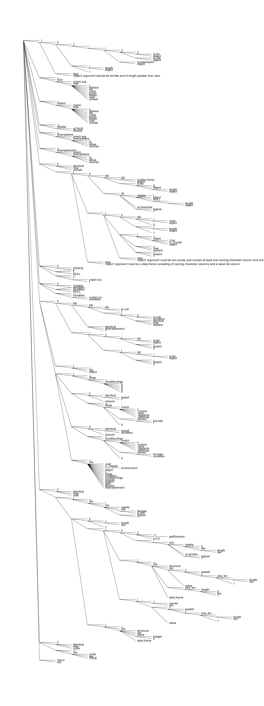

vignettes/articles/3-calls-and-expressions.Rmd
3-calls-and-expressions.RmdUnevaluated R code is always parsed or captured as a set of expressions, which is a collective term used to refer to any of the following types of objects: scalar constants e.g. TRUE or 1, symbols e.g. quote(x), call objects e.g. quote(x <- 1), expression vectors e.g. expression(a <- 1, 2 * b) or pairlists e.g. formals(seq.default). Call objects and expression vectors are hierarchically structured objects (also called abstract syntax trees) that can be decomposed into symbols and scalar constants as atomic building blocks. For an introduction to expressions and abstract syntax trees, see also the chapter https://adv-r.hadley.nz/expressions.html.
Call objects and expression vectors generally behave as nested lists, e.g. subsetting a call object works the same as subsetting a nested list. To illustrate, we can retrieve the abstract syntax tree of a call object by recursing through the object in the same way as for a nested list:
## recurse through call as nested list ast <- function(expr) { lapply(expr, function(x) { if(is.call(x) || is.expression(x)) { ast(x) } else { x } }) } ## decompose call object str(ast(quote(y <- x <- 1 + TRUE))) #> List of 3 #> $ : symbol <- #> $ : symbol y #> $ :List of 3 #> ..$ : symbol <- #> ..$ : symbol x #> ..$ :List of 3 #> .. ..$ : symbol + #> .. ..$ : num 1 #> .. ..$ : logi TRUE
Given this information, we might expect that base rapply() also recurses through call objects and expression vectors in the same way as for nested lists, but this is unfortunately not the case. To be precise, rapply() does accept expression vectors as input, but effectively treats them as flat lists of call objects similar to lapply(). Call objects are not accepted at all by rapply() and return an error.
## rapply on an expression vector rapply(expression(y <- x <- 1, f(g(2 * pi))), f = identity) #> [[1]] #> y <- x <- 1 #> #> [[2]] #> f(g(2 * pi)) ## lapply on an expression vector lapply(expression(y <- x <- 1, f(g(2 * pi))), FUN = identity) #> [[1]] #> y <- x <- 1 #> #> [[2]] #> f(g(2 * pi)) ## rapply on a call object (not ok!) tryCatch({ rapply(quote(y <- x <- 1), f = identity) }, error = function(error) error$message) #> [1] "'object' must be a list or expression"
rrapply()
Starting from version 1.2.0 rrapply() also supports recursion of call objects and expression vectors, which are treated as nested lists based on their internal abstract syntax trees. As such, all functionality described in vignette("1-when-to-use-rrapply") extends directly to call objects and expression vectors.
When applying rrapply() (or base rapply()) to nested lists the difference between how = "replace" and how = "list" is relatively minor. Both choices return a nested list, but only how = "list" replaces elements not subject to f by the argument deflt. For call objects and expression objects, the difference is more important as how = "replace" always maintains the type of the object after application of rrapply(), whereas how = "list" returns the object formatted as a nested list.
With how = "replace", we can for instance directly update the abstract syntax tree of a call object:
library(rrapply) call_old <- quote(y <- x <- 1 + TRUE) str(call_old) #> language y <- x <- 1 + TRUE ## update call object call_new <- rrapply(call_old, classes = "logical", f = as.numeric, how = "replace") str(call_new) #> language y <- x <- 1 + 1
Using how = "list", we can update the abstract syntax tree and return it as a nested list:
## update and decompose call object call_ast <- rrapply(call_old, f = function(x) ifelse(is.logical(x), as.numeric(x), x), how = "list") str(call_ast) #> List of 3 #> $ : symbol <- #> $ : symbol y #> $ :List of 3 #> ..$ : symbol <- #> ..$ : symbol x #> ..$ :List of 3 #> .. ..$ : symbol + #> .. ..$ : num 1 #> .. ..$ : num 1
Remark: Note that in the second function call we did not use classes = "logical" to avoid that all list elements that are not of class "logical" are replaced by the deflt argument (NULL).
The choices how = "prune", how = "flatten" and how = "melt" return the pruned abstract syntax tree as: a nested list, a flattened list and a melted data.frame respectively. This is identical to application of rrapply() to the abstract syntax tree formatted as a nested list. To illustrate, let us return all names in the abstract syntax tree of an expression vector that are not part of base R.
## example expression expr <- expression(y <- x <- 1, f(g(2 * pi))) ## check if name is not in base environment is_new_name <- function(x) !exists(as.character(x), envir = baseenv()) ## prune and decompose expression expr_prune <- rrapply(expr, classes = "name", condition = is_new_name, how = "prune") str(expr_prune) #> List of 2 #> $ :List of 2 #> ..$ : symbol y #> ..$ :List of 1 #> .. ..$ : symbol x #> $ :List of 2 #> ..$ : symbol f #> ..$ :List of 1 #> .. ..$ : symbol g ## prune and flatten expression expr_flatten <- rrapply(expr, classes = "name", condition = is_new_name, how = "flatten") str(expr_flatten) #> List of 4 #> $ : symbol y #> $ : symbol x #> $ : symbol f #> $ : symbol g ## prune and melt expression expr_melt <- rrapply(expr, classes = "name", condition = is_new_name, how = "melt") expr_melt #> L1 L2 L3 value #> 1 ..1 ..2 <NA> y #> 2 ..1 ..3 ..2 x #> 3 ..2 ..1 <NA> f #> 4 ..2 ..2 ..1 g
This section provides several worked out code examples using rrapply() to recurse through the abstract syntax tree of a call object, mainly inspired by the codetools package and the chapter https://adv-r.hadley.nz/expressions.html#ast-funs. Note that all examples can also be rewritten using recursive function definitions in base R, but the use of rrapply() makes the code more concise and easier to follow and reason about. The examples are ordered in increasing degrees of code complexity.
T and F
In https://adv-r.hadley.nz/expressions.html#ast-funs, to demonstrate recursion of the abstract syntax tree of an expression, a recursive function logical_abbr() is defined to check for the presence of the logical abbreviations T and F in an expression object:
## recursive function to check for T or F logical_abbr <- function(x) { if (is.atomic(x)) { FALSE } else if (is.name(x)) { identical(x, quote(T)) || identical(x, quote(F)) } else if (is.call(x) || is.pairlist(x)) { for (i in seq_along(x)) { if (logical_abbr(x[[i]])) return(TRUE) } FALSE } else { stop("Don't know how to handle type ", typeof(x), call. = FALSE) } } call1 <- quote(mean(x, na.rm = T)) call2 <- quote(f(x = c(TRUE, FALSE))) ## containing a logical abbreviation logical_abbr(call1) #> [1] TRUE ## not containing a logical abbreviation logical_abbr(call2) #> [1] FALSE
Let us revisit this example to not only find, but also replace any logical abbreviations by their non-abbreviated counterparts. Using rrapply(), we should set how = "replace" in order to maintain the original object type after updating the abstract syntax tree:
## expand logical abbreviation logical_abbr_expand <- function(x) { if(identical(x, quote(T))) { TRUE } else if(identical(x, quote(F))) { FALSE } else { x } } call3 <- expression(f(x = c(T, F)), any(T, FALSE)) rrapply(call1, f = logical_abbr_expand, how = "replace") #> mean(x, na.rm = TRUE) rrapply(call3, f = logical_abbr_expand, how = "replace") #> expression(f(x = c(TRUE, FALSE)), any(TRUE, FALSE))
A second demonstrating example of abstract syntax tree recursion in https://adv-r.hadley.nz/expressions.html#ast-funs deals with finding all variables in an expression created by assignment. The recursive function find_assign() finds all variables created by assignment with <- and returns them as a character vector:
find_assign <- function(x) { if (is.atomic(x) || is.name(x)) { character() } else if (is.call(x)) { if (identical(x[[1]], quote(`<-`)) && is.name(x[[2]])) { lhs <- as.character(x[[2]]) } else { lhs <- character() } unique(c(lhs, unlist(lapply(x, find_assign)))) } else if (is.pairlist(x)) { unique(unlist(lapply(x, find_assign))) } else { stop("Don't know how to handle type ", typeof(x), call. = FALSE) } } call4 <- quote({ l <- list() l$a <- 5 names(l) <- "b" }) find_assign(call4) #> [1] "l"
Revisiting this example using rrapply(), we essentially need to filter any name (i.e. symbol) that is the second element of a call to <-. Checking the position of the element in the call can be done with the special .xpos argument. To verify that the first element of the call is an actual assignment, we can make use of the special .xsiblings argument. We slightly generalize the find_assign() function to also return variables created by =, for, assign or delayedAssign.
## helper function to check if variable is created by assignment is_assign <- function(x, .xpos, .xsiblings) { ## element is second in call identical(.xpos[length(.xpos)], 2L) && ## first element in call is assignment as.character(.xsiblings[[1]]) %in% c("<-", "=", "for", "assign", "delayedAssign") } rrapply(call4, condition = is_assign, f = as.character, how = "unlist") #> [1] "l"
The codetools package contains findGlobals() to find all global variables used by a function. Building on the previous example, we can construct our own (simplified) version of findGlobals() by searching for any variable in the body of a function that is not a local variable or a function argument. More precisely,
We collect the variable names that are not global variables in a character vector exclude. This includes: the function arguments; all variables created by assignment as in the previous example; package names used with :: or ::: (e.g. stats in stats::lm()); and variable names used with $ or @ (e.g. x$a for a list or x@a for an S4-object).
We recurse through the abstract syntax tree similar to the previous example by discarding all variable names that are elements of exclude or part of the base environment (i.e. baseenv()). The remaining global variables are returned as a character vector.
Remark: For the sake of simplicity, we have not been completely rigorous in this example. For instance, function arguments of inline functions are not excluded from the set of global variables. Also, variable names created by assign() or delayedAssign() could be assigned to e.g. .GlobalEnv, in which case they should arguably be recognized as global variables.
## helper function to check for non-global variables is_exclude <-function(x, .xpos, .xsiblings) { (identical(.xpos[length(.xpos)], 2L) && as.character(.xsiblings[[1]]) %in% c("<-", "=", "for", "assign", "delayedAssign", "::", ":::")) || (identical(.xpos[length(.xpos)], 3L) && as.character(.xsiblings[[1]]) %in% c("@", "$")) } ## helper function to check for global variables is_global <- function(x, exclude) { !is.null(x) && nzchar(as.character(x)) && !as.character(x) %in% exclude && !exists(as.character(x), envir = baseenv()) } find_globals <- function(fun) { ## find variables to exclude exclude <- rrapply(body(fun), condition = is_exclude, f = as.character, how = "unlist") exclude <- c(names(formals(fun)), exclude) ## find global variables globals <- rrapply(body(fun), classes = "name", condition = is_global, f = as.character, exclude = exclude, how = "unlist") return(unique(globals)) }
To illustrate our newly defined function find_globals(), let us apply it to the rrapply() function itself:
find_globals(rrapply) #> [1] "C_unmelt" "C_rrapply"
C_unmelt() and C_rrapply() are the internal workhorses of rrapply() and are part of the rrapply-package. By default, the codetools findGlobals() function also returns variable names in the base package. Discarding all names present in the base package findGlobals() produces the same result as find_globals():
## update existing findGlobals function findGlobals2 <- function(fun, merge = TRUE) { globals <- codetools::findGlobals(fun, merge = merge) globals[sapply(globals, Negate(exists), envir = baseenv())] } findGlobals2(rrapply) #> [1] "C_rrapply" "C_unmelt"
Several additional comparisons of find_globals() and findGlobals2() applied to some common R functions:
## par is part of formals(plot.default) find_globals(plot.default) #> [1] "Axis" "box" "plot.window" "title" "xy.coords" #> [6] "dev.hold" "dev.flush" "plot.new" "plot.xy" findGlobals2(plot.default) #> [1] "Axis" "box" "dev.flush" "dev.hold" "par" #> [6] "plot.new" "plot.window" "plot.xy" "title" "xy.coords" ## model.frame is present as stats::model.frame find_globals(lm) #> [1] "model.frame" "model.response" "model.weights" "model.offset" #> [5] "is.empty.model" "model.matrix" "lm.fit" "lm.wfit" #> [9] ".getXlevels" findGlobals2(lm) #> [1] ".getXlevels" "is.empty.model" "lm.fit" "lm.wfit" #> [5] "model.matrix" "model.offset" "model.response" "model.weights" ## parallel functions are present as parallel::... find_globals(boot::boot) #> [1] "runif" "empinf" "isMatrix" #> [4] "normalize" "index.array" "freq.array" #> [7] "mclapply" "makePSOCKcluster" "clusterSetRNGStream" #> [10] "parLapply" "stopCluster" "boot.return" findGlobals2(boot::boot) #> [1] "boot.return" "empinf" "freq.array" "index.array" "isMatrix" #> [6] "normalize" "runif"
To conclude, let us consider plotting abstract syntax trees as dendrograms. Base R includes a plot() method for dendrogram objects, therefore it suffices to write a function that allows to convert expression objects to dendrogram objects. It turns out that a dendrogram object is defined as a nested list with specific attributes for each list component to turn it into a dendrogram. As seen previously, we can convert the abstract syntax tree of an expression object to a nested list with rrapply() by setting how = "list". In addition, we need to recurse through the nested list to add the dendrogram specific attributes. To achieve this for a single node, we define a separate helper function add_dend_attrs() that distinguishes between branch (i.e. list) nodes and leaf nodes in the abstract syntax tree.
The height attribute in add_dend_attrs() is calculated as a function of the depth of the node under evaluation and the overall maximum depth of the abstract syntax tree. The first can be obtained via the special argument .xpos, the second is evaluated by recursing once through the abstract syntax tree with a call to rrapply(). To apply add_dend_attrs() to each node of the nested list, we set feverywhere = "recurse" in a second call to rrapply() as explained in vignette("1-when-to-use-rrapply").
## helper function to add dendrogram attributes add_dend_attrs <- function(x, .xpos, maxdepth) { if(is.list(x)) { x <- rev(x) members <- length(unlist(x)) attributes(x) <- list( members = members, midpoints = members - 1 ) } else { x <- ifelse(!is.null(x), as.character(x), "NULL") attributes(x) <- list( label = x, members = 1, leaf = TRUE ) } attr(x, "height") <- 1 + (1 - length(.xpos)) / maxdepth return(x) } ## convert expression to dendrogram expr_to_dend <- function(expr) { maxdepth <- integer(1) dend1 <- rrapply(expr, f = function(x, .xpos) { if(length(.xpos) > maxdepth) maxdepth <<- length(.xpos); x }, how = "list") dend2 <- rrapply(list(dend1), f = add_dend_attrs, maxdepth = maxdepth, feverywhere = "recurse")[[1]] class(dend2) <- "dendrogram" return(dend2) }
To test the defined function, we provide as call object the body of the rrapply() function itself and pass it to expr_to_dend() to convert it to a dendrogram:
## plot abstract syntax tree as dendrogram (rrapply_dend <- expr_to_dend(body(rrapply))) #> 'dendrogram' with 14 branches and 318 members total, at height 1 plot(rrapply_dend, horiz = TRUE, type = "triangle", yaxt = "n")
